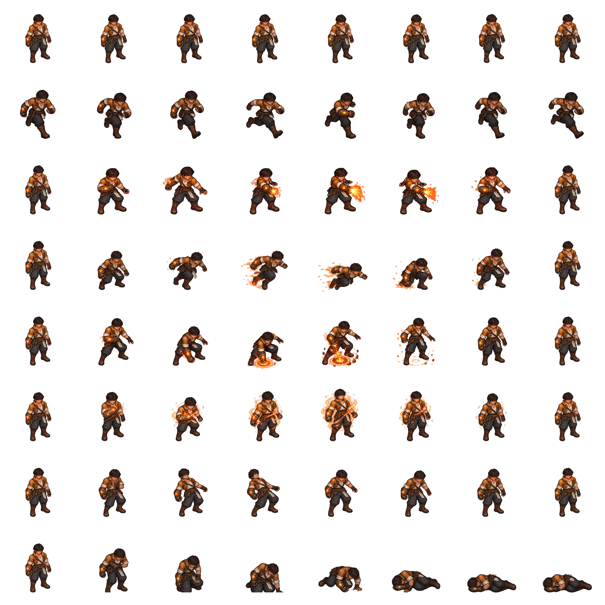

SPRITE SHEET COLLECTION
Bring the fire to life.
Eight painted animation clips. Sixty-four frames. One Ember Warden.

Loading
Loading animation…
FRAME INSPECTOR
Every pose in sequence.
Select a frame to pause and inspect it.
COMBINED EXPORT
One row per animation.
Rows: idle, run, Flame Fan, Cinder Step, Ember Snare, Furnace Heart, hurt, death. Eight columns contain the eight sequential frames of each clip.
